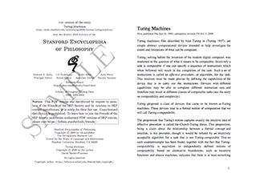

Become a Friend of the SEP and Access PDFs
You can support the Stanford Encyclopedia of Philosophy by joining the Friends of the SEP Society. By paying modest, annual membership dues to join the Society, members will receive the following benefits: (a) download access to high quality PDF (Portable Document Format, a.k.a. Acrobat) versions of SEP entries and (b) quarterly email notifications (if you ‘opt-in’) that inform you when PDFs you've downloaded have been updated in the most recent quarterly SEP Archive.
Go to the Friends of the SEP Society Home Page
The home page for the Society is located at https://leibniz.stanford.edu/friends/.
Sample PDFs
Paper Size: US Letter
(8½ × 11 in)Paper Size: A4
(210 × 297 mm) Sample PDF
Entry on Turing MachinesSample PDF
Entry on Turing Machines
We also release our PDFs in single-column half-sheets (5½ × 8½ in)—see the Sample PDF. You might find this format especially useful for mobile devices.
Membership Levels
You can join the Friends of the SEP Society, using our secure online payment system, at one of the following levels:
- Associate Member: Associate members may download any of the PDF versions in the PDF Library but are limited to downloading a maximum of 5 different entries per day.
- Student Member: Student members have the same privileges as Associate Members, but annual membership dues are priced lower.
- Professional Member: Professional members may download any of the PDF versions in the PDF Library, with no daily limits on the number of different entries that can be downloaded each day.
For pricing information, see the section on Membership Levels at the page About the Society.